01/ 04
More facets, more sparkle.
Extra facets mean more light reflections, resulting in a dazzling play of fire and brilliance.
01The Centurion Cut
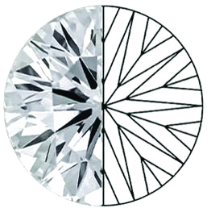
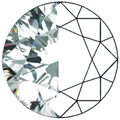
The Centurion Diamond is designed with 100 facets, creating a distinctive play of light and sparkle.
01The Centurion Advantage
01/ 04
Extra facets mean more light reflections, resulting in a dazzling play of fire and brilliance.
02/ 04
The advanced cut amplifies the diamond’s glow, making it shine even in the softest light.
03/ 04
A modern take on classic beauty, crafted for those who desire exceptional sparkle and distinction.
04/ 04
It is just better brilliance — visible to the naked, untrained eye.
03A Study in Light
Where a traditional stone lets light slip through the pavilion, the Centurion geometry turns it back toward you.
100
Facets
The Centurion Diamond is designed with 100 facets, creating a distinctive play of light and sparkle.
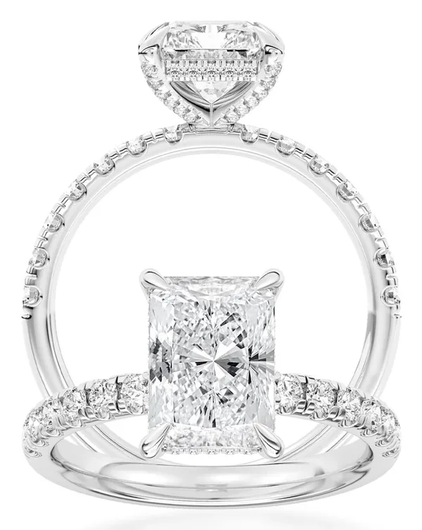
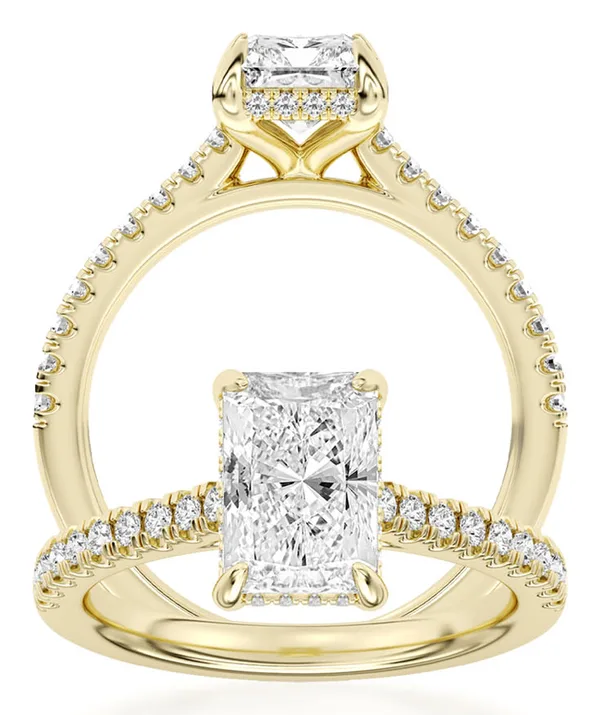
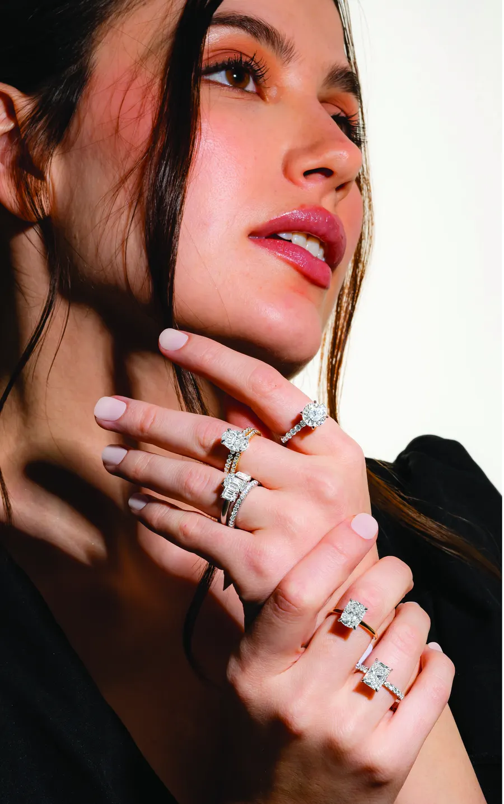
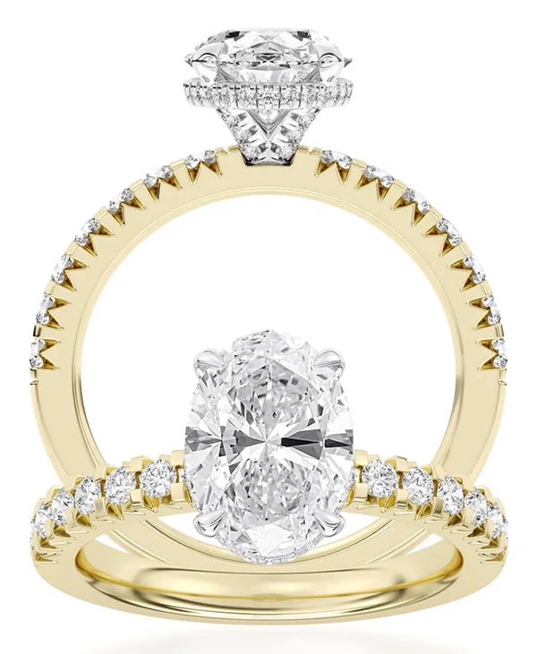
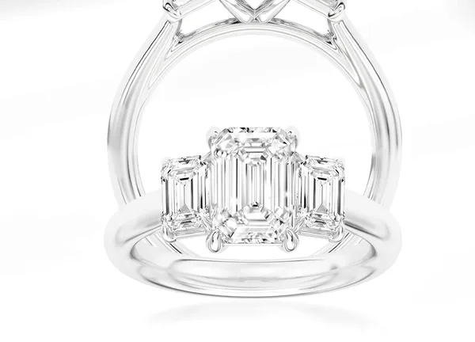
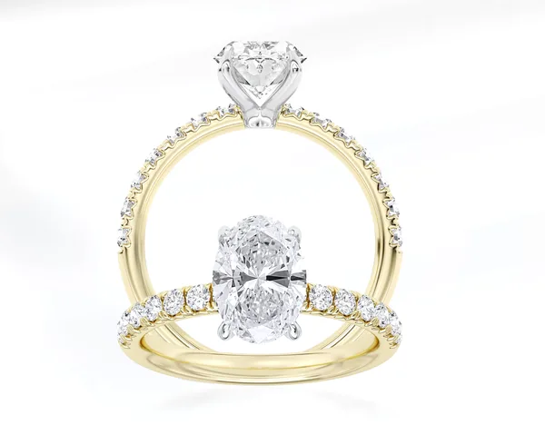
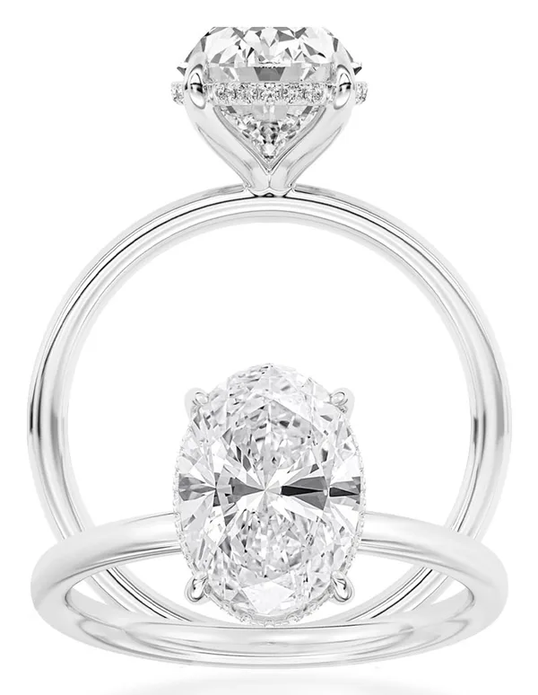
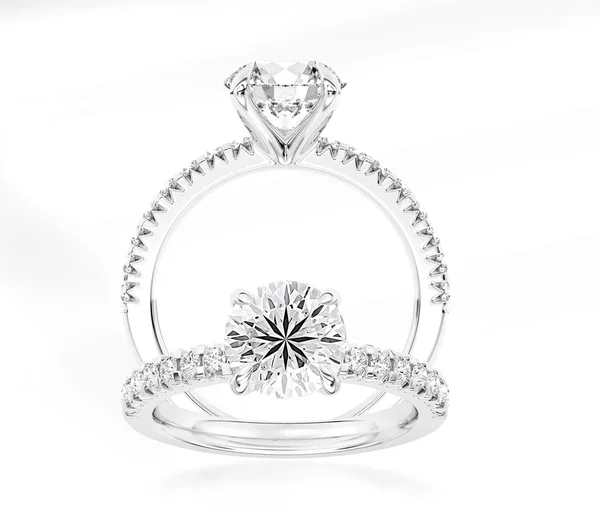
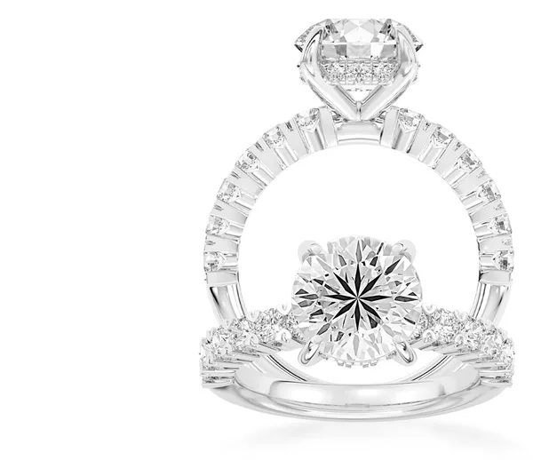
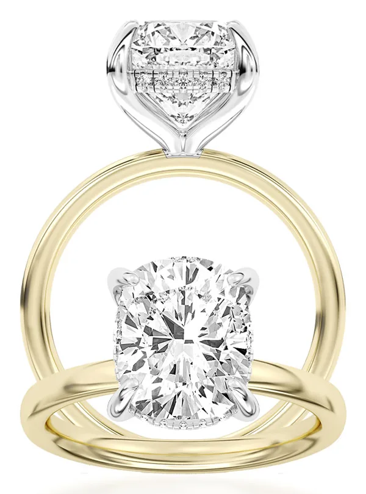
02The Collection
Built exclusively in Platinum and 14K gold. Every centre stone is a 100-facet Centurion Diamond.
Every centre stone is a 100-facet Centurion Diamond.
The Centurion Collection Discover every design.
Explore the collection →04Worn
Perfect for bridal rings and timeless jewellery, the Centurion collection transforms light into an extraordinary spectacle.
Most diamonds need a spotlight. The Centurion cut was engineered for restaurant light, window light, candlelight — the light people actually live in.
See the difference. Feel the radiance.
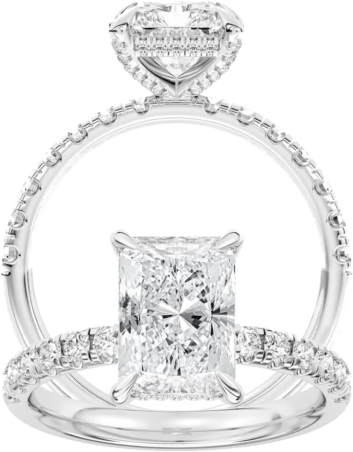
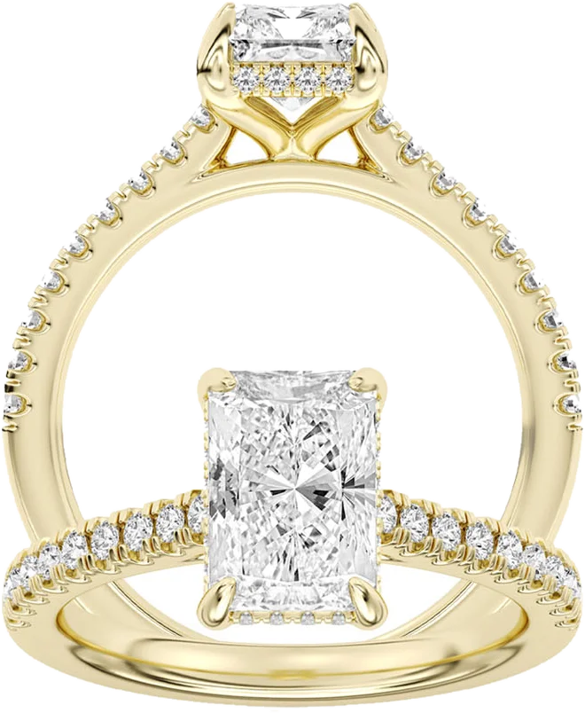
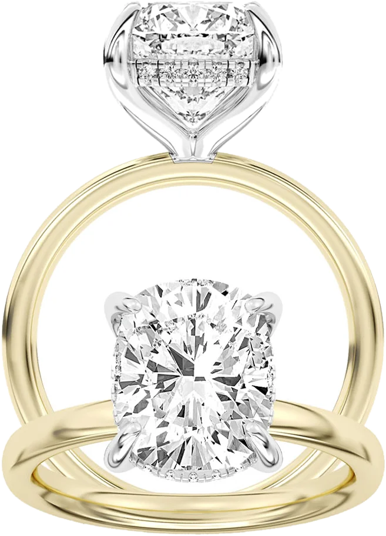
05Materials
Denser, rarer, and naturally white. With gold at a historic high, platinum now sits close to 14K white gold — while holding a far higher perceived value.
A warm ground that pushes the stone forward. The contrast between yellow metal and a colourless centre reads brighter to the eye.
A white head cradling the centre stone, carried on a yellow shank. The setting disappears; the diamond does not.
The entire collection is built in Platinum and 14K Yellow — no exceptions, no substitutions.

06At Retail
The Centurion Collection comes with a thoughtfully crafted display, distinguished by its sophisticated branded presentation.
The collection arrives as a complete statement, not a loose assortment.
07Exclusivity
100
Facets per centre stone
43+
More facets than a traditional cut
9
Settings in the debut collection
Because the Centurion Diamond is patent-pending, the collection is exclusive to you. Customers cannot price-shop it against other retailers or online sellers — nothing like it exists elsewhere.
The result is a protected margin on a piece that sells itself across the counter, and a premium collection that lifts the average ticket rather than discounting it.
Unshoppable by design.
Enquire about stockingCenturion at Retail
Bring the Centurion Collection to your jewelry case.
Contact Us